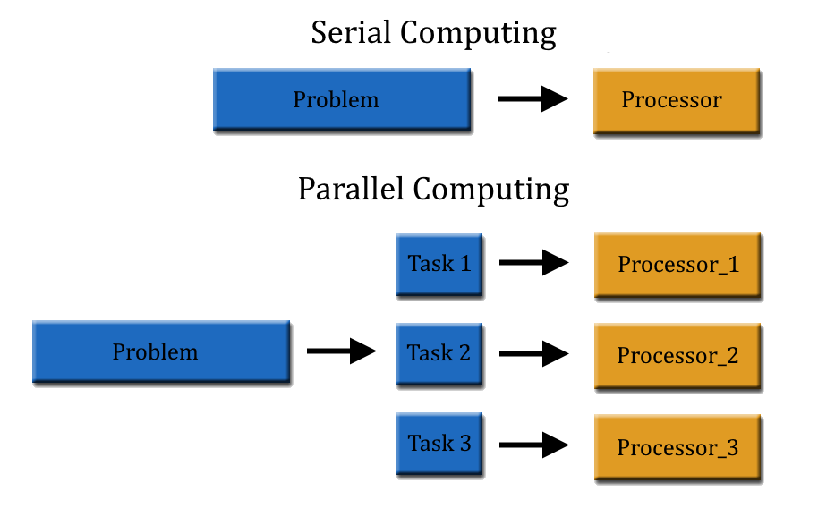

How Parallel Processing Works
Parallel processing is the process in which you take a large amount of things and process them all at the same time. In the video, they talked about using GPU parallel processors. They used this to work through a lot of data really quickly, as it's the most effective & efficient. GPU's have thousands of processor cores which makes it much faster to process data. This type of processing is used in many different fields of technology. AI (Artificial Intellegence) is furthur being advanced through parallel processing. In the future, we will see self driving cars to become more common. This is because through parallel processing, it can make AI faster which makes it more efficient, which means that more people will use it in the future.
Data and Medicine
Our DNA sequences are over 3 billion letters long. Everyones genetic sequence is different, and this data takes a lot of time to process without parallel processing. In the video, they took out all the human sequences that were presented in the data, and then searched all the non human sequences that they got, compared to a database that contains gene sequences of every known organism. The findings/matches that they find are extremely important in finding the disease and finding a good cure.
If we weren't able to process big data through parallel processing, things would be much less efficient and we would have less advancements in things like, cars, medical equipment, and more.
The sources I used: "Data and Medicine" and "How Parallel Processing Works"